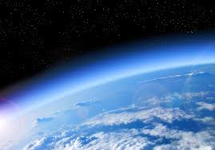

Contemplating the beauty of the atmosphere, colors, and phenomena above our heads.
Welcome to the special page that will discuss everything about the sky!
The atmosphere is Earth's protective shield that blocks deadly solar radiation and provides oxygen. The sky looks blue due to Rayleigh Scattering. When sunlight hits atmospheric gases, blue light—which has shorter wavelengths—is scattered in all directions, making the daytime sky appear bright blue.

Our sky often puts on magical natural light shows. Here are some of them:
Clouds are classified into different types based on their shapes. Here are three major clouds you should know: